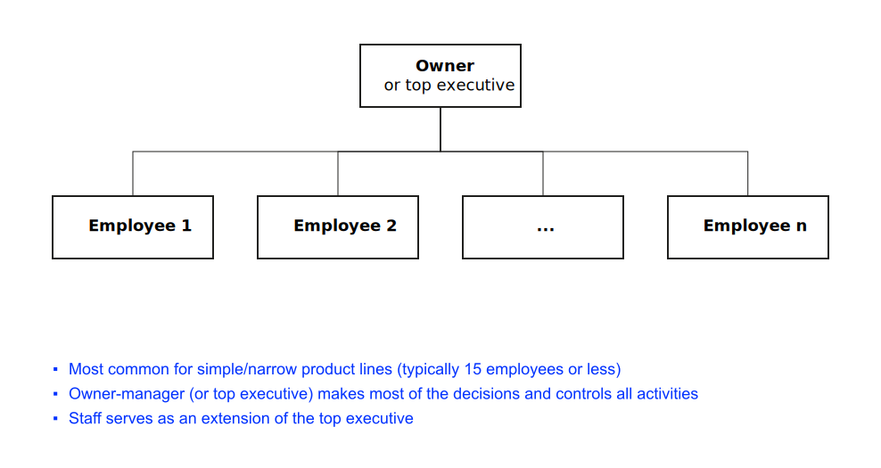
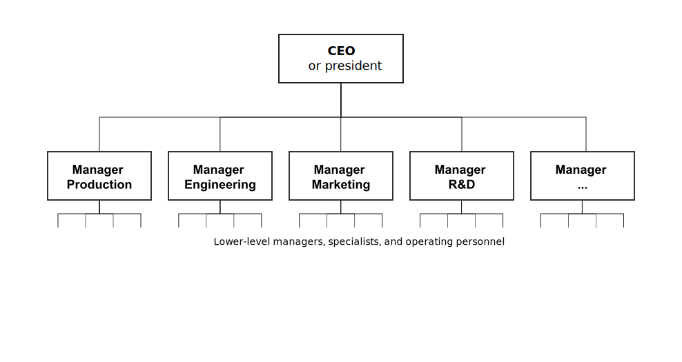
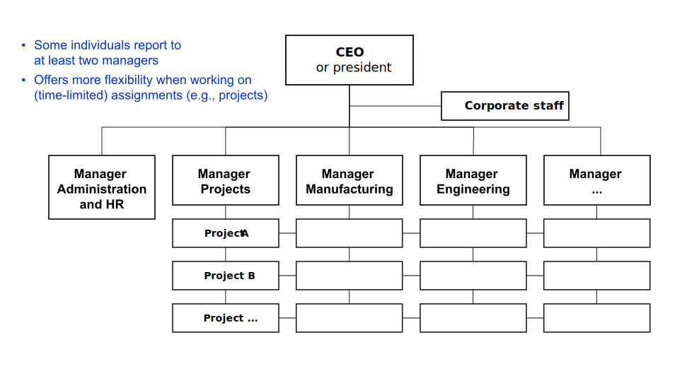

Organizational Design
Strategy and Performance Management
Neu-Ulm University of Applied Sciences
July 22, 2025
Learning objectives
After this section, you should have a solid understanding of
- the need to match a firm’s structure with its strategy;
- different types of organizational structure;
- advantages and disadvantages of these structural types;
- key strategic issues related to CDO/CIO roles;
- the concept of structural ambidexterity and how it relates to CDO/CIO roles;
- as well as the need for and characteristics of periods of convergence and upheaval.
Prologue
When an organization shifts its strategy, its structural design typically must adapt as well.
Organizational alignment
Definition
Powell (1992) defines organizational alignment as the coherence among various components within an organization, including structure, processes, culture, and strategies.
Effects of alignment
Firms with a high degree of alignment are better equipped to adapt to changes in their external environment, are more resilient to threats and better able to capitalize on emerging opportunities.
Research identifies four dimensions of organizational alignment that significantly relate to profitability (Powell, 1992):
- Internal structural fit
- Size-structure fit
- Size-planning components fit
- Environment-structure fit
Discussion
When Roy Jakobs became CEO in 2022, Philips faced a crisis with its CPAP recall and struggled with organizational misalignment. The company had grown into a diversified conglomerate spanning lighting, consumer electronics, and healthcare.
How would you assess Philips’ organizational alignment at that point using Powell’s four dimensions?
Which dimension(s) were most problematic?
McKinsey 7S framework

Discussion
Philips’ transformation under Jakobs leadership can be analyzed using the 7S framework.
For which element(s) can you identify specific changes Jakobs has implemented?
Which element was the most critical to address first, and why?
Structural adaptation
Structure follows strategy
Changes in strategy often require changes in organizational structure because structure dictates how objectives and policies are established and determines how resources are allocated (David & David, 2016).
Discussion
Which triggers prompted Philips’ structural changes?
- Were these changes primarily driven by strategic objective changes, market evolution, environmental shifts, or internal factors?
- Could Philips have avoided the crisis if they had restructured earlier?
Need for structural changes
Structural adaptation becomes necessary when strategic objectives change, new markets or products are pursued, or environmental conditions shift significantly.
Understanding this relationship, what structural options are available to organizations, and how do they evolve over time?
Integration strategies
Overview
Organizations can pursue vertical integration (forward or backward), horizontal integration, or related diversification.
Each integration strategy requires different structural approaches.
Structural design principles
Lawrence & Lorsch (1967) outline following guidelines for integration strategies:
- Differentiation: Maintain specialized capabilities in each integrated unit
- Integration mechanisms: Create coordination systems across integrated operations
- Conflict resolution: Establish processes for resolving inter-unit conflicts
- Information systems: Develop shared information and control systems
Structural options
Overview
Organizations can choose from simple structures for small firms, functional structures for specialization, divisional structures for diversification, or matrix structures for complex coordination.
Simple structure


Functional structure

Divisional structure


Discussion
Philips historically operated with a divisional structure across multiple industries (lighting, healthcare, consumer electronics, semiconductors).
What do you think were the advantages of this structure for Philips in the 1990s-2000s?
From your point of view, why did these turn into disadvantages?
Matrix structure


Strategic business units
Strategic business unit (SBU) structure represents a hybrid approach that combines divisional autonomy with corporate portfolio management and strategic coordination.
Discussion
Philips spun off or sold multiple SBUs including Signify (lighting), ASML (semiconductors), and NXP (chips). These companies are now very successful independently.
What did Philips gain and lose through this “de-diversification”?
Compare this to companies like GE or Samsung that maintain SBU structures.
Performance implications
Different organizational structures create distinct performance patterns: efficiency vs. innovation trade-offs, speed vs. coordination challenges, and cost vs. flexibility implications.
Structural evolution patterns


Structure x DT
Leadership in DT
Digital transformation (DT) requires new leadership roles: CIOs evolving from operational to strategic and CDOs emerging to lead transformation.
Reflection
Form small groups of 3 to 4 students. Discuss your findings from reading Lorenz & Buchwald (2023). Prepare to present the key findings.
Your summary must include the following considerations:
- the roles of CDO and CIO,
- strategic reasons for introducing a CDO role,
- the dynamics and challenges related to the relationship between CDOs and CIOs,
- (structural) ambidexterity in relation to the roles of CIO and CDO,
- and recommendations for the design and implementation of organisational structures that efficiently support digital transformation.
15:00
Roles
The Chief Information Officer (CIO) traditionally leads the IT department, ensuring technology infrastructure supports organizational goals. They manage data, information systems, and IT operations as well as they address cybersecurity, data privacy, and compliance with IT regulations (Lorenz & Buchwald, 2023).
The Chief Digital Officer (CDO) is responsible for driving digital innovation and transformation across the organization. They often focus on enhancing customer experiences through digital channels and technologies. They collaborate across departments to integrate digital solutions into various aspects of the business (Lorenz & Buchwald, 2023).
They may face challenges in aligning strategic objectives and collaborating effectively.
Strategic imperative for a CDO
The CDO role is typically introduced with the objective of leading digital transformation initiatives and ensuring that the organization maintains a competetive edge in the digital age.
Excursus: structural ambidexterity
Organizations need to balance exploitation (efficiency and optimization) and exploration (innovation and new opportunities) through structural mechanisms.
Discussion
Jakobs states “There is no single product in Philips that does not have AI” while simultaneously emphasizing patient safety as the #1 priority.
- How is Philips balancing exploration (AI innovation) with exploitation (safety, reliability, regulatory compliance)?
- What structural mechanisms enable this ambidexterity?
- What are the risks of getting this balance wrong in healthcare?
Structural transitions
Prologue
Most successful firms experience periods of convergence with incremental changes followed by periods of upheaval with major system-wide transformations (Mintzberg, 2014).
Periods of convergence
In convergent periods stable and interconnected social systems emerge, in which the most successful and resilient actors maintain their position.
Periods of upheaval
Periods of upheaval with frame-breaking change occurs in response to major environmental shifts and involves revolutionary transformation of organizational systems.
The need for discontinuous change usually springs from (Mintzberg, 2014):
- Industry discontinuities (emergence of substitutes, new technologies)
- Product life-cycle shifts (moving between emergence, growth, maturity, decline)
- Internal company dynamics (leadership changes, ownership shifts, strategic reorientation)
Leadership requirements
Convergence periods require maintaining alignment and incremental adjustment while frame-breaking change demands comprehensive executive involvement and fresh perspective.
Key takeaways
- Organizational alignment among structure, processes, culture, and strategies creates sustainable competitive advantage
- Performance implications vary by structure
- Five main structure types serve different strategic contexts
- Integration strategies require specific structural approaches
- Structural evolution follows predictable patterns driven by organizational size, strategy, environment, and complexity
- Digital transformation creates new leadership requirements with CIO and CDO roles requiring clear boundaries and collaboration
- Structural ambidexterity enables organizations to balance exploitation (efficiency) and exploration (innovation) simultaneously
- Organizational evolution alternates between convergence periods (incremental change) and frame-breaking transformation (revolutionary change)
Review and consolidation
The following questions are designed to review and consolidate what you have learned and are a good starting point for preparing for the exam.
- Explain the concept of organizational alignment.
- Relate the 7s framework to the concept of organizational alignment.
- List reasons why firms with a high degree of organizational alignment are better able to adapt to changes in their external environment, are more resilient to threats and better able to capitalize on emerging opportunities.
- Do research on Strategic Business Unit (SBU) structure and explain the difference between a SBU structure and a divisional organizational structure.
- Discuss advantages and disadvantages of a functional versus a divisional organizational structure.
- Compare and contrast the roles of Chief Information Officer (CIO) and Chief Digital Officer (CDO) in an organization. How do their responsibilities contribute to strategy formation and strategy implementation?
- Define and elaborate on the concept of structural ambidexterity in the context of CIO and CDO roles. How can organizations achieve a balance between exploitation and exploration in their structures?
- How can organizational structures be designed to facilitate effective collaboration between different functional areas?
Homework
Read Barnett & Salomon (2012) and make notes on following questions:
- What are the primary objectives of Barnett and Salomon’s study regarding CSR and financial performance?
- How do the authors measure CSR and financial performance in their study?
- What are the main findings of the study regarding the relationship between CSR and financial performance?
- Were there any unexpected or counterintuitive results in the research findings? How do these findings contribute to the understanding of CSR in strategic management?
- How can the findings of this study inform strategic management practices?